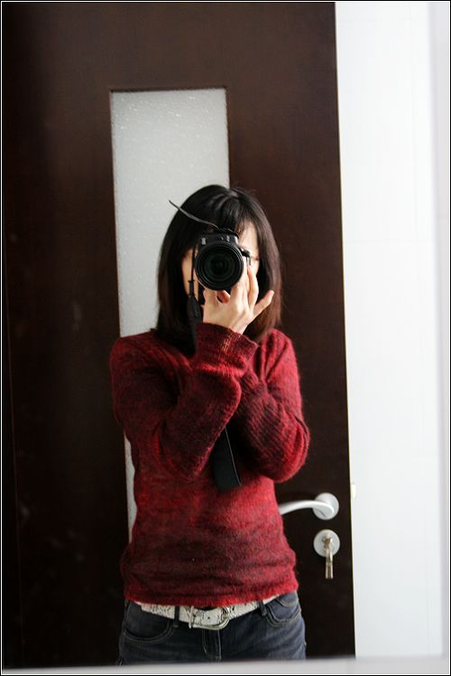

眼睁睁地看。。。 @ Mar 16, 2009
Luke终于一改以前的胆怯，睁大眼睛看人了。
它喜欢一只白色高贵的萨摩耶，别的公狗想要亲近它喜欢的萨摩耶，Luke会疯狂地将对方驱逐，即使它的体型只有对方的1/2大。狗狗的一切都与原始欲望联系在一起，吃喝拉撒睡，出去玩，追逐喜欢的异性，在她面前做出各种奇怪的小样儿，逗她开心。青年的Luke发起嗲来，真是。。。别看它一副小老头的摸样。
我在去上海的火车上，便开始想它了。


这对我来说就是短发。
喜欢头发看上去很多很多的样子。
就象喜欢浓郁的，很正很正的颜色一样。
头发上半部分是新鲜的黑色，而下面则因为染发烫发的缘故有些枯萎。
为什么不继续黑色呢？我是那么喜欢黑色。
以后要多多保护健康黑色的头发。
今天得知33岁女演员李钰患淋巴癌去世，医学专业人士说每个人体内都带有癌细胞，如果没有充足的睡眠、健康均衡的饮食、良好的卫生习惯和自我调节情绪的能力，在抵抗力下降的时候癌就会发作。李钰的病和生活不规律，经常染发烫发有关，是这样么？而且经常感冒的人也要特别注意。
有个女朋友将烫发染发一起做了，头发烫的不满意，生气地去超市买东西。一位老先生目不转睛地看了她好久，恶狠狠地说：“中国人的黑头发最漂亮，我是医生，你知不知道染发会致癌啊？”本来就生气的她，听到这话差点哭出来。



19 Responses to “眼睁睁地看。。。”
2009-03-16
怎么感觉头发更厚了，
热哦
2009-03-16
反季节，反季节，呵呵~~
2009-03-16
漂亮
2009-03-16
有空欢迎常来转转……那照片如果给你震撼，可以想象我的震撼……现在的头发比长头发看起来显得成熟典雅，但要注意打理，因为一不注意就容易显老。
2009-03-16
呀，换发型啦？不错，戴上眼镜更好看~~
2009-03-16
这个短发衬得你娇嫩年轻。。
2009-03-16
脸部有点背光
2009-03-16
觉得没有原来好看。不过，改变可能是件好事。。。Change we need!
2009-03-17
这样的发型是要配合妆容的，不过，尝试一下也挺好，我长发飘飘很多年了，也厌烦了，但是没有勇气改变！
2009-03-17
恩，短发是需要衣装来衬托的。
如果皮肤很好面孔娇好，衣服稍微朴素些也可以。
2009-03-17
亲，你的皮肤很好哦，想知道是怎么保养的，嘻嘻
2009-03-17
其实不好呀，有雀斑，因为皮肤细腻而容易生皱纹。
睡眠吧，除此之外没别的保养了，偶尔贴张面膜，现在用的是日本眼霜，妮维雅的日霜和夜霜，资生堂的水。而且我还不怎么吃蔬菜水果，喜欢吃荤的。比较喜欢吃牛筋、鸭掌、鸡爪子、诸如筋筋皮皮的荤食。
女性年轻与否和体内雌性激素也有关吧？
2009-03-17
美女~你喜欢吃的牛筋、鸭掌、鸡爪子、诸如筋筋皮皮的荤食。都是含有胶原蛋白高的食物，能使皮肤保持润滑而富有弹性呢~~会吃~~
2009-03-17
发型很漂亮,不过打理起来太麻烦.
2009-03-17
一点不麻烦，不要将层次打的太大，太薄，这样洗完头吹干就好了。早晨起来翘的地方喷点水，吹一下，很快的。直发比卷发好打理。我还想再短点。。。
2009-03-18
还是笑起来更好看呢
2009-03-18
不要再短了。。不女人了。。蓬松的感觉很不错啊~~
2009-03-20
颜色怎么会不一样呢，你又没染 。不过我喜欢你直发，我现在也是短直发
2009-03-20
i like your hair. i’m going to get this cut next time.
Leave A Reply
存档只读，评论已关闭。